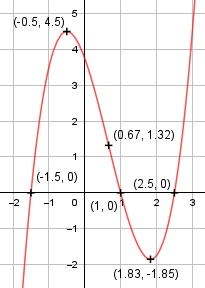

Aufgabe 32 f(x) = x3 - 2x2 - 2,75x + 3,75 f'(x) = 3x2 - 4x - 2,75, f''(x) = 6x - 4, f'''(x) = 6 Definitionsbereich: -∞ < x < ∞ Wertebereich: -∞ < f(x) < ∞ Asymptoten: - Symmetrie: - Nullstellen: x3 - 2x2 - 2,75x + 3,75 = 0 Durch Probieren gefunden x = 1. Hornerschema: 1 -2 -2,75 3,75 x1 = 1 1 -1 -3,75 ----------------------------- 1 -1 -3,75 0 Polynomdivision: x3 - 2x2 - 2,75x + 3,75 : (x-1) = x2 - x - 3,75 -(x3 - x2) ------------------ -x2 - 2,75x + 3,75 -(x2 + x) ------------- -3,75x + 3,75 -(-3,75x + 3,75) --------------- 0 x2 - x - 3,75 = 0 p, q - Formel: p = -1, q = -3,75 x2,3 = x2,3 = 0,5 ± x2,3 = 0,5 ± x2,3 = 0,5 ± 2 x2 = 2,5 x3 = -1,5 N1(1|0), N2(2,5|0), N3(-1,5|0) Schnittpunkt mit der y-Achse: f(0) = 03 - 2 * 02 -2,75 * 0 + 3,75 = 3,75 Sy(0|3,75) Extrempunkte: 3x2 - 4x - 2,75 = 0 A, B, C - Formel: A = 3, B = -4, C = -2,75 x1,2 = x1,2 = x1,2 = 4 ± 7 x1,2 = -------- 6 x1 = 11/6, f(11/6) = (11/6)3-2*(11/6)2-2,75*(11/6)+3,75 = = -1,85 x2 = - 0,5, f(-0,5) = (-0,5)3 - 2 * (-0,5)2 - -2,75 * (-0,5) + 3,75 = 4,5 f''(11/6) = 6 * 11/6 - 4 > 0 --> Tiefpunkt (11/6|- 1,85) f''(-0,5) = 6 * (-0,5) - 4 < 0 --> Hochpunkt (-0,5|4,5) Wendepunkte: 6x - 4 = 0 |+ 4 6x = 4 | :6 x = 2/3, f(2/3) = (2/3)3 - 2 * (2/3)2 - 2,75 * (2/3) + + 3,75 = 1,32, f'''(2/3) ≠ 0 --> Wendepunkt (2/3|1,32) Graph:
